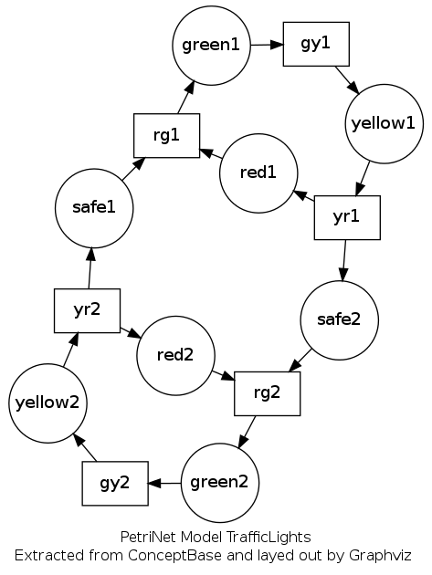

We consider the case of petri nets. The goal to to export them in a format that can be further processed by the GraphViz layout tool http://graphviz.org/. We assume familiarity with the ConceptBase user interface and with the query language of ConceptBase, in particular with the answer formatting system at http://conceptbase.sourceforge.net/userManual75/cbm004.html.
The tutorial includes the following steps:
Petri nets consist of places (displayed as circles) and transitions (displayed as rectangles). Places can have tokens on them (the marking of a place). Directed links exist between places and transitions, and between transition and places.
Start a CBShell
cbshell
and then a CBserver within the CBShell (all subsequent commands are within the CBShell command window):
cbserver -db PETRINETS
We use a database PETRINETS here. It persistently stores the subsequent definitions. As next step, tell in the CBShell the definitions for petri nets:
tell '
Place with
attribute sendsToken: Transition;
marks: Integer {* defines markings *}
end
Transition with
attribute producesToken : Place
end
'
The two classes allow to represent all features of a classical petri net.
Now, we want to be able to maintain several petri nets in ConceptBase next to each other. They should not interfer with each other. PNModel shall include rules that define which elements of the petri net model are of interest for the visualization that we aim for. In this case, we are not interested in the marking but in all other elements:
tell '
PNElement end
Place isA PNElement end
Transition isA PNElement end
Place!sendsToken isA PNElement end
Transition!producesToken isA PNElement end
PNModel in Class with
attribute
contains: PNElement
rule
r1: $ forall p/Place m/PNModel a/Place!sendsToken
(m contains p) and Ai(p,sendsToken,a)
==> (m contains a) $;
r2: $ forall t/Transition m/PNModel a/Transition!producesToken
(m contains t) and Ai(t,producesToken,a)
==> (m contains a) $
end
'
The class PNElement subsumes all elements of a petri net model that we are interested in. The class PNModel then aggregates such elements to a model. The two rules allow will add all links between places and transitions that are declared as part of the model.
Let’s define the classical Dutch traffic light example as a petri net model:
tell '
red1 in Place with
sendsToken
t1: rg1
end
yellow1 in Place with
sendsToken
t1: yr1
end
green1 in Place with
sendsToken
t1: gy1
end
safe1 in Place with
sendsToken
t1: rg1
end
yr1 in Transition with
producesToken
p1: red1;
p2: safe2
end
rg1 in Transition with
producesToken
p1: green1
end
gy1 in Transition with
producesToken
p1: yellow1
end
red2 in Place with
sendsToken
t1: rg2
end
yellow2 in Place with
sendsToken
t1: yr2
end
green2 in Place with
sendsToken
t1: gy2
end
safe2 in Place with
sendsToken
t1: rg2
end
yr2 in Transition with
producesToken
p1: red2;
p2: safe1
end
rg2 in Transition with
producesToken
p1: green2
end
gy2 in Transition with
producesToken
p1: yellow2
end
TrafficLights in PNModel with
contains
e1: red1;
e2: yellow1;
e3: green1;
e4: safe1;
e5: red2;
e6: yellow2;
e7: green2;
e8: safe2;
e9: yr1;
e10: rg1;
e11: gy1;
e12: yr2;
e13: rg2;
e14: gy2
end
'
The last object TrafficLights lists the places and transitions that are supposed to be part of the model. The rules r1 and r2 of PNModel will automatically add the links as well to the model TrafficLights.
We want to export transitions (as boxes), places (as circles), and the two link types as directed links:
tell '
BOXNODE_FORMAT in AnswerFormat with
pattern p:
"node [shape=box]; {Foreach( ({this.elem}), (n), {n};)}"
end
CIRCLENODE_FORMAT in AnswerFormat with
pattern p:
"node [shape=circle,fixedsize=true,width=0.9]; {Foreach( ({this.elem}), (n), {n};)}"
end
LINK_FORMAT in AnswerFormat with
pattern p:
"{Foreach( ({this.elem}),(l),{From({l})}->{To({l})};\\n)}"
end
'
The answer format shall iterate over all elements that match the corresponding export class (Foreach this.elem). The following query computes the elements for a given export class. The textual elements like "node" and "shape" are specific to the GraphViz format.
tell '
GenericQueryClass ShowElement isA PNModel with
required,parameter
pn: PNModel;
type: Proposition
computed_attribute
elem: PNElement
constraint
c1: $ (pn = this) and
(this contains elem) and
(elem in type) $
end
'
So, when we ask the query ShowElement for the model TrafficLights and the export type Place, we get as answer in this.elem all those elements of the petri net that are places.
ask ShowElement[TrafficLights/pn,Place/type] OBJNAMES FRAME
If you call the same query with the CIRCLENODE_FORMAT, the answer shall be the export string for those petri net elements:
ask ShowElement[TrafficLights/pn,Place/type] OBJNAMES CIRCLENODE_FORMAT
As a last step we define a query ShowPN with a special answer format that takes care that all elements of the petri net are exproted using the right answer format, and that puts some additional Graphviz statements around it required by the GraphViz tool.
tell '
GenericQueryClass ShowPN isA PNModel with
required,parameter
pn: PNModel
constraint
c1: $ (pn = this) $
end
GraphVizPN in AnswerFormat with
forQuery q: ShowPN
head h: "
# Generated by ConceptBase {cb_version} at {transactiontime}
# Process this file by Graphviz, e.g.
# neato -Tpng thisfile.txt > thisfile.png
"
pattern p: "
digraph {this} \{
{ASKquery(ShowElement[{this}/pn,Transition/type],BOXNODE_FORMAT)}
{ASKquery(ShowElement[{this}/pn,Place/type],CIRCLENODE_FORMAT)}
{ASKquery(ShowElement[{this}/pn,Place!sendsToken/type],LINK_FORMAT)}
{ASKquery(ShowElement[{this}/pn,Transition!producesToken/type],LINK_FORMAT)}
overlap=false
label=\"PetriNet Model {this}\\\n
Extracted from ConceptBase and layed out by Graphviz \"
fontsize=12;
\}
"
end
'
The tag digraph instructs GraphViz to regard the exported text as the specification of a directed graph. The complete documentation of the GraphViz format is at http://graphviz.org/Documentation.php.
The query ShowPN is used to trigger the creation of the answer accoring to the answer format GraphVizPN. The anser format has a head that creates some header for the output. In this case, it generates some comment lines. The pattern is applied to all answer objects of query ShowPN: this is exactly one, namely the PNModel supplied with the parameter pn. This answer object matches the expression {this} in the pattern.
Certain special character of the pattern need to be escaped. The clause starting with label is to be followed by a double quote. Since this double quote is inside the pattern string, which is double-quoted, the internal double quote needs to be espacef by a backslash.
The other example is the sequence with three backslashes followed by an n. The purpose is to pass just a backslash-n to the output. To do so, the answer formatting tool of ConceptBase must be instructed to produce the blackslash character rather than interpreting the backslash itself.
Try out the query call
ask ShowPN[TrafficLights/pn] OBJNAMES GraphVizPN
in the CBShell window. It will bind variable this to the object TrafficLights. This string is printed by the answer format after the string digraph. Then an opening curly bracket follows that needed to be escaped since curly brackets have a special meaning in answer formats. Afterwards, three queries are called from within the answer format. The first one will generate the GraphViz commands for specifying the box nodes. The next one is replaced by the GraphViz commands for the circle nodes, followed by the commands for the links.
Afterwards three more text lines are added to the output.
The definitions are stored in the database PETRINETS. To retrieve only the desired output from it, first stop the CBserver via the CBShell
stopServer
Then, start it again with tracing disabled:
cbserver -t no -db PETRINETS
Then, call the query and show the answer:
ask ShowPN[TrafficLights/pn] OBJNAMES GraphVizPN showAnswer
The output of the command is formed by the GraphVizPN answer format. Its text for the TrafficLights example is:
# Generated by ConceptBase 7.5.02 at 2013-06-24 10:26:41
# Process this file by Graphviz, e.g.
# neato -Tpng thisfile.txt > thisfile.png
digraph TrafficLights {
node [shape=box]; gy2; yr2; rg2; gy1; yr1; rg1;
node [shape=circle,fixedsize=true,width=0.9]; green2; yellow2; red2;
safe2; safe1; green1; yellow1; red1;
safe2->rg2;
green2->gy2;
yellow2->yr2;
red2->rg2;
safe1->rg1;
green1->gy1;
yellow1->yr1;
red1->rg1;
gy2->yellow2;
rg2->green2;
yr2->safe1;
yr2->red2;
gy1->yellow1;
rg1->green1;
yr1->safe2;
yr1->red1;
overlap=false
label="PetriNet Model TrafficLights\n
Extracted from ConceptBase and layed out by Graphviz "
fontsize=12;
}

Figure 1: TrafficLights model layed out by GraphViz
You can store the file and convert it to a diagram with GraphViz. With the neato layouter the output looks as shown in figure 1
All commands of this tutorial are also available from the CB-Forum at http://merkur.informatik.rwth-aachen.de/pub/bscw.cgi/3504020.